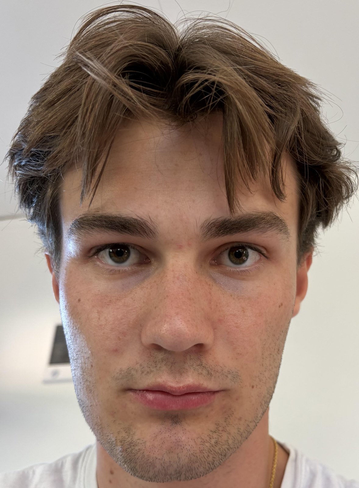
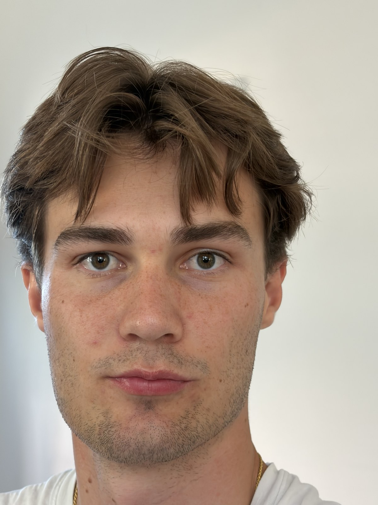
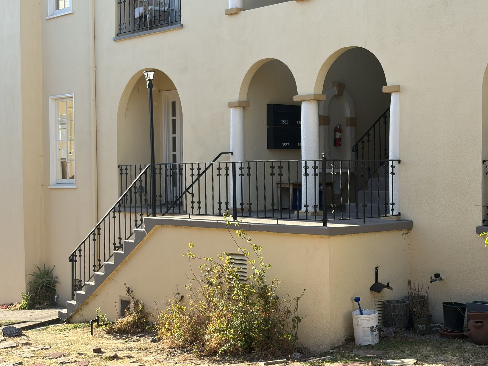
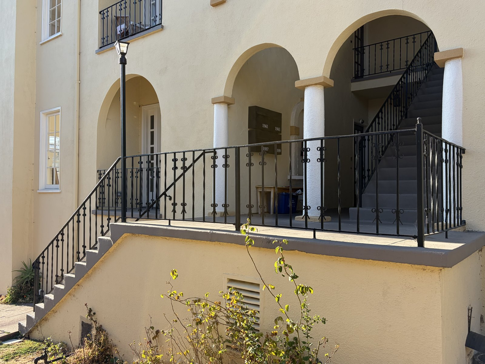
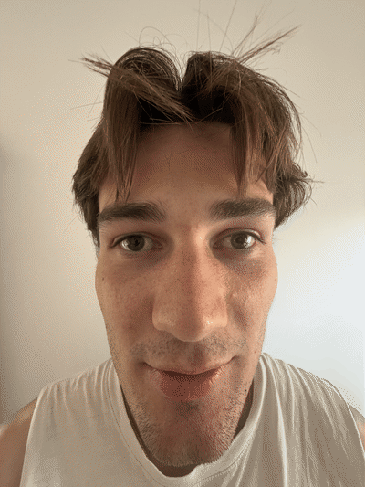
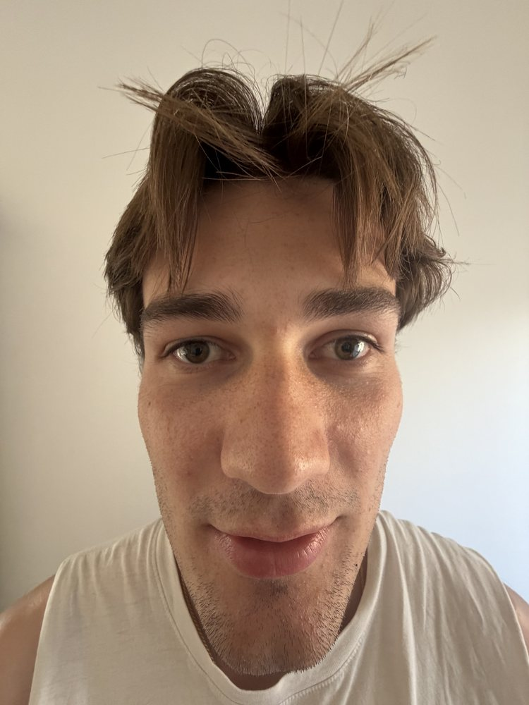
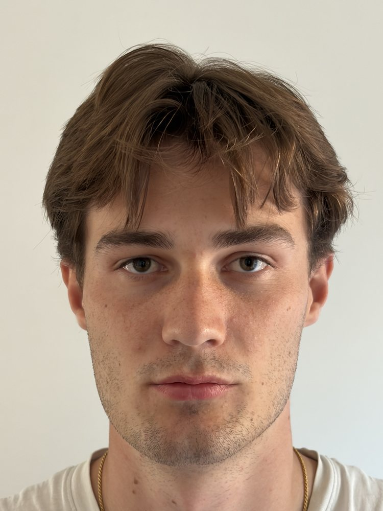
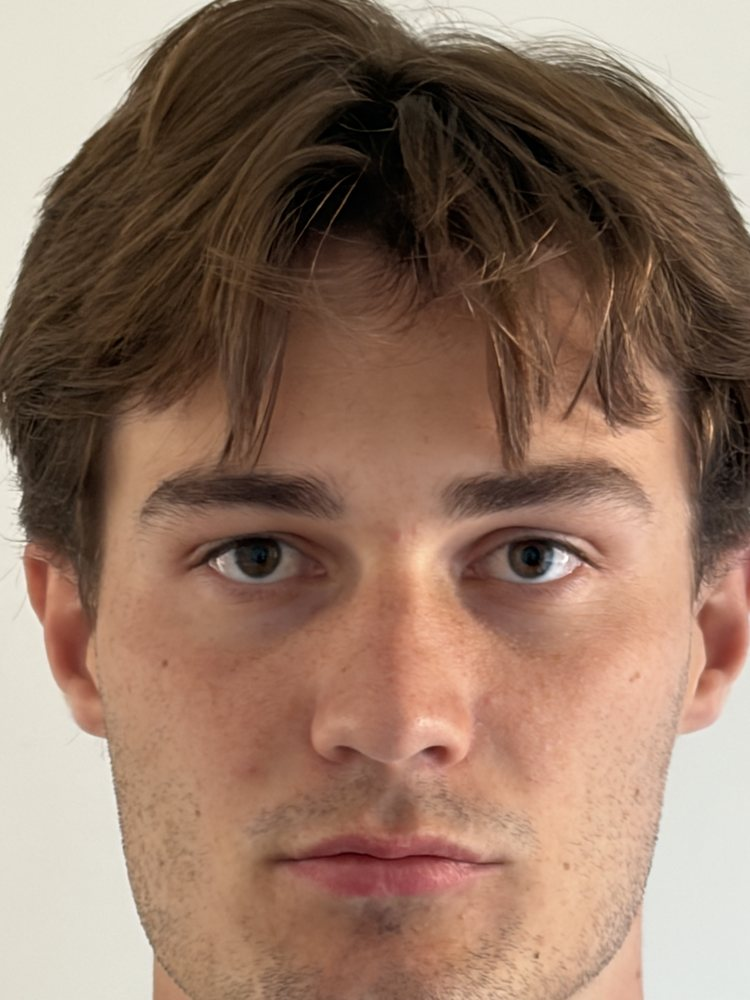
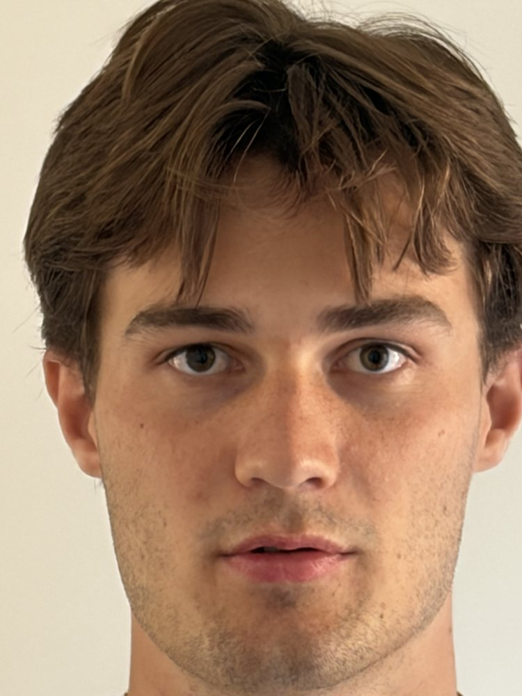
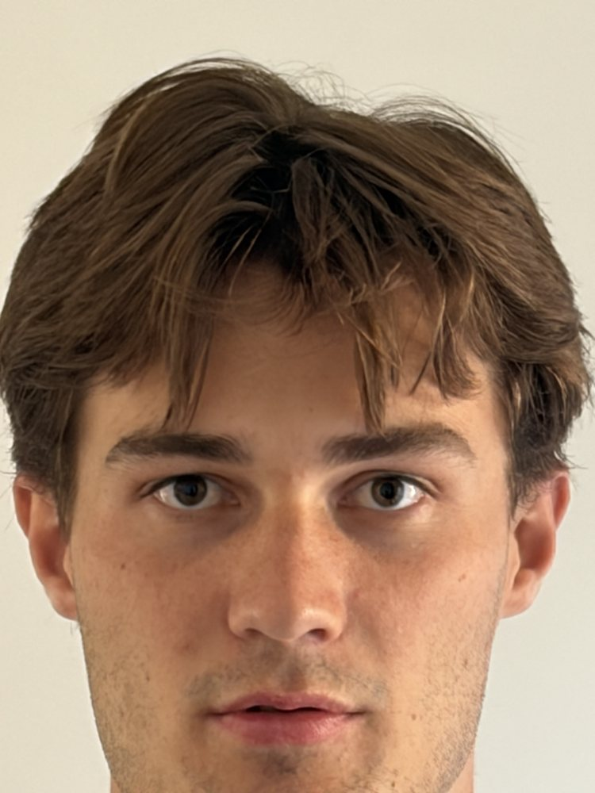

Project 0 · Programming Project
Three small experiments on one idea: the shape of a photograph is decided by where you stand, not by how far you zoom. Zoom only chooses how much of that shape you keep.
Same face, same framing, two very different noses.
Both frames below are framed to put my face at roughly the same size. The only thing that changed between them is how far the camera was from my head — arm’s length for the first, a few feet back with the lens zoomed in to about 60 mm equivalent for the second.


A camera projects the world by dividing by depth: a feature at distance Z lands on the sensor scaled by f / Z. What matters for the shape of a face is therefore not Z itself but the ratio of depths between its parts.
| Shot | Camera to nose | Camera to ears | Depth ratio | Nose magnified by |
|---|---|---|---|---|
| Arm’s length | ~30 cm | ~42 cm | 1.40 | +40 % |
| Stepped back | ~150 cm | ~162 cm | 1.08 | +8 % |
My nose sits about 12 cm in front of my ears in both photographs — that never changes. But at arm’s length that 12 cm is 40 % of the total distance, so the nose is projected 40 % larger than the ears. From 1.5 m it is only 8 %, which reads as a normal face. The distortion isn’t the lens misbehaving; it is honest perspective applied to a subject that is uncomfortably close.
The takeaway
Perspective is set entirely by the center of projection — the position of the pinhole. Focal length cannot change it. Zooming in from the same spot would have given me an identical, equally distorted face, just cropped tighter. What fixed the portrait was walking backwards; the zoom was only there to undo the shrinking that walking backwards caused.
The same experiment, run backwards, on a building.
Here I did the reverse: I started far away with the lens zoomed to 58 mm equivalent, then walked in to about half the distance and shot again at the native 27 mm wide angle. The arcade fills roughly the same fraction of both frames.


Take the near arch at distance Z and the far arch a fixed 6 m behind it. Their projected sizes are in the ratio (Z + 6) / Z, which depends on Z alone — the focal length divides out completely.
| Shot | Focal (35 mm equiv.) | Distance to facade | Near : far arch size | Reads as |
|---|---|---|---|---|
| Zoomed, far | 58 mm | ~24 m | 1.25 × | flattened |
| Wide, close | 27 mm | ~11 m | 1.55 × | deep, dramatic |
From 24 m, a 6 m difference in depth is a rounding error, so near and far details come back nearly the same size and the building collapses into a flat pattern. From 11 m that same 6 m is a large fraction of the total distance, so near features grow, lines converge harder, and depth reappears.
The takeaway
“Telephoto compression” is a misnomer. The long lens didn’t compress anything — standing far away did, by shrinking the relative depth differences in the scene. The long lens is simply what makes standing far away practical, because it crops back to a usable framing. Distance controls geometry; focal length controls field of view.
Hitchcock’s Vertigo shot: back up and zoom in at the same time.
Parts 1 and 2 each changed distance and focal length together to hold the subject’s size fixed. The dolly zoom is what you get when you do that continuously, in one shot. I stepped backwards through five positions while zooming from 14 mm to 249 mm equivalent — an 18× swing in focal length, and so an 18× change in distance — keeping my head the same height in every frame.

The head stays locked at the same size, which is exactly the point: the two effects are cancelling. But the face is visibly morphing underneath. At 14 mm the camera is centimetres away, so my nose is dramatically closer to the lens than my ears — it swells, the forehead pushes forward, and the jaw tapers away. By 249 mm I am metres back, every point on my face is at nearly the same distance, and the whole thing flattens into an almost orthographic mask: wider cheekbones, larger ears, a nose lying flush with the rest of the face.
It is the Part 1 comparison turned into a continuous animation, with every intermediate step visible.





The takeaway
In cinema the shot is normally read off the background: the subject holds still while the world behind them rushes in or falls away, because the subject’s distance ratio is pinned by the zoom while everything at a different depth is not. My background here is a blank wall with no depth cues, so that channel is missing — instead the effect shows up on the only other surface in the frame with real depth variation, my own face.
Both readings are the same fact: holding f / Z constant for one plane cannot hold it constant for any other. Something at a different depth always has to give.